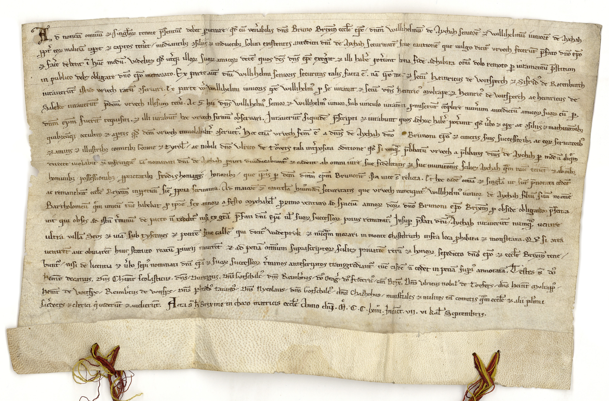

BayHStA, Hochstift Brixen Urkunden, 15



Kommentar
Editor: katharina.wolff@textgrid.de
Archiv: BayHStA
Bestand: Hochstift Brixen Urkunden
Signatur: 15
Ort: Brixen
Datum: 1264 August 27
Schlagwort: Urkunde
Schwierigkeitsgrad: mittel
Kurzbetreff:
Urfehdeurkunde
Urfehdeurkunde
Schreiberhände:
- unbekannter Schreiber (S1)
Kommentar:
Die Herren Wilhelm d. Ä. und Wilhelm d. J. v. Aichach (Aicha?) schwören Bischof Bruno von Brixen und den Grafen von Görz und Tirol sowie dem Edlen Ulrich von Taufers Urfehde.
Bemerkenswert ist die Verwendung des aus dem germanischen Inventar stammenden Wortes Zitatvrvech (Urfehde). Rechtsbegriffe aus der Volkssprache wurden gelegentlich übernommen, vgl. die Urkunde des Hochstifts Passau Nr. 29 aus dem Jahr 1049, in der das Wort Zitatbann (Gewalt) übernommen wurde.
Zunächst bedeutete die Urfehde jenen Eid, den sich Streitparteien nach Beendigung einer Fehde zur künftigen Friedenswahrung schworen. Seit dem Spätmittelalter bedeutete sie das Versprechen, ein bestimmtes Gebiet nicht mehr zu betreten oder auch der von Haftentlassenen oder Freigesprochenen geleistete Eid, sich für die Anklage nicht zu rächen. Wer eine Urfehde brach, galt als meineidig.
Es handelt sich hier um eine frühgotische Minuskelschrift, die Merkmale sowohl der diplomatischen Minuskel als auch einer frühen gotischen Schrift aufweist.
Typisch für die ältere diplomatische Minuskel sind die nach links gebogenen Unterlängen, z.B. der Buchstaben s, f, p, h und q wie in presentium in Zeile 1, in caperet et captos in Zeile 2 oder in antescriptos in Zeile 17.
Der Schreiber verwendet zwei Versionen von r, vgl. in Zeile 1 tenore und Bruno. In letzterem Fall handelt es sich um ein gestrichenes r (d.h. ein mit einem kleinen Aufwärtsstrich über dem Buchstaben versehenes r), das wiederum als typisches Merkmal der diplomatischen Minuskel gelten darf. Gelegentlich treten beide r-Formen im selben Wort auf, wie in morari in Zeile 15.
Ein Merkmal der gotischen Minuskel sind die bis in die Unterlänge reichenden Schäfte von f, g, q, s etc., wie z.B. in existentes in Zeile 2 oder in successorum in Zeile 14.
Auf eine gotische Schrift weist auch die beginnende Schleifenbildung der Buchstaben f, g, J und s u.a. hin, wie z.B. in Juraverunt in Zeile 7.
U wird gelegentlich für v verwendet und umgekehrt. Vgl. vrvech, z.B. in Zeile 2 rechts oder uerbo, z.B. in Zeile 7 rechts.
Für den Buchstaben m verwendet der Schreiber zwei Versionen, vgl. mulrape in Zeile 5 und machinationibus in Zeile 7.
Die Herren Wilhelm d. Ä. und Wilhelm d. J. v. Aichach (Aicha?) schwören Bischof Bruno von Brixen und den Grafen von Görz und Tirol sowie dem Edlen Ulrich von Taufers Urfehde.
Bemerkenswert ist die Verwendung des aus dem germanischen Inventar stammenden Wortes Zitatvrvech (Urfehde). Rechtsbegriffe aus der Volkssprache wurden gelegentlich übernommen, vgl. die Urkunde des Hochstifts Passau Nr. 29 aus dem Jahr 1049, in der das Wort Zitatbann (Gewalt) übernommen wurde.
Zunächst bedeutete die Urfehde jenen Eid, den sich Streitparteien nach Beendigung einer Fehde zur künftigen Friedenswahrung schworen. Seit dem Spätmittelalter bedeutete sie das Versprechen, ein bestimmtes Gebiet nicht mehr zu betreten oder auch der von Haftentlassenen oder Freigesprochenen geleistete Eid, sich für die Anklage nicht zu rächen. Wer eine Urfehde brach, galt als meineidig.
Es handelt sich hier um eine frühgotische Minuskelschrift, die Merkmale sowohl der diplomatischen Minuskel als auch einer frühen gotischen Schrift aufweist.
Typisch für die ältere diplomatische Minuskel sind die nach links gebogenen Unterlängen, z.B. der Buchstaben s, f, p, h und q wie in presentium in Zeile 1, in caperet et captos in Zeile 2 oder in antescriptos in Zeile 17.
Der Schreiber verwendet zwei Versionen von r, vgl. in Zeile 1 tenore und Bruno. In letzterem Fall handelt es sich um ein gestrichenes r (d.h. ein mit einem kleinen Aufwärtsstrich über dem Buchstaben versehenes r), das wiederum als typisches Merkmal der diplomatischen Minuskel gelten darf. Gelegentlich treten beide r-Formen im selben Wort auf, wie in morari in Zeile 15.
Ein Merkmal der gotischen Minuskel sind die bis in die Unterlänge reichenden Schäfte von f, g, q, s etc., wie z.B. in existentes in Zeile 2 oder in successorum in Zeile 14.
Auf eine gotische Schrift weist auch die beginnende Schleifenbildung der Buchstaben f, g, J und s u.a. hin, wie z.B. in Juraverunt in Zeile 7.
U wird gelegentlich für v verwendet und umgekehrt. Vgl. vrvech, z.B. in Zeile 2 rechts oder uerbo, z.B. in Zeile 7 rechts.
Für den Buchstaben m verwendet der Schreiber zwei Versionen, vgl. mulrape in Zeile 5 und machinationibus in Zeile 7.
Entzifferung
(Absatz Beginn)
1 Ad noticia(m) omniu(m) (et) sing(u)lo(rum) tenore p(re)sentiu(m) debet p(er)uenire/ q(uo)d cu(m) ven(er)abilis d(omi)n(u)s Bruno Brixin(ensis) eccl(esi)e ep(iscopu)ca) / d(omi)n(u)m Willihelmu(m) de Aychah seniore(m) (et) Willihelmu(m) iuniore(m) de Aychah
2 p(ro)pt(er) eo(rum) malicia(m) cap(er)et (et) captos ten(er)et/ mediantib(us) (con)siliis (et) inductib(us) soluti existentes antedicti d(omi)ni de Aychah securitate(m) siue cautione(m) que uulgo dicit(ur) vrvech feceru(n)t p(re)fato d(omi)no ep(iscop)o
3 (et) fac(er)e debent i(n) hu(n)c modu(m). Videlic(et) q(uo)d ut(er)q(ue) illo(rum) suo(rum) amico(rum) dece(m) quos d(i)c(tu)s d(omi)n(u)s ep(iscopu)c exeg(er)it (et) illi hab(er)e pot(er)unt bona fide adhibita om(n)i dolo remoto p(er) iuramentu(m) p(re)stitum
4 in publico deb(et) obligare d(omi)no ep(iscop)o memorato. Ex parte aut(em) d(omi)ni Willihelmi senioris securitas talis facta e(st). na(m) ipsemetb) (et) secum Heinricus de Voitsperch (et) Sifrid(us) de Rotenburch
5 iuraueru(n)t istud vrvech ratu(m) (con)seruari. ex parte v(er)o Willihelmi iunioris ip(s)e Willihelm(us) p(ro) se iurauit (et) secu(m) d(omi)n(u)s Heinric(us) Mvlrape (et) Heinric(us) de Voitsperch ac Heinricus de
6 Saleke iuraueru(n)t p(re)dict(u)m vrvech illesum ten(er)i. Ac (etiam) hii d(omi)n(u)s Willihelm(us) senior (et) Willihelm(us) iunior sub uinculo iuram(en)ti p(ro)miseru(n)t co(m)plere num(er)um antedictu(m) amico(rum) suo(rum) cum per
7 d(omi)n(u)m ep(iscopu)m fueri(n)t requisiti. (et) illi iurabu(n)t hoc vrvech firmu(m) obseruari. Juraueru(n)t si quide(m) p(re)scripti (et) iurabunt quos adhuc hab(er)e pot(er)unt quod u(er)bo (et) o(per)e ac (con)siliis (et) machinat(i)o(n)ib(us)
8 quib(us)cu(m)q(ue) occultis (et) ap(er)tis q(uo)d d(i)c(tu)m vrvech inuiolabilit(er) (con)seruet(ur). Hoc etia(m) vrvech fact(u)m e(st) a d(omi)nis de Aychah d(omi)no Brunoni ep(iscop)o (et) cunctis suis successorib(us) ac eo(rum) seruitorib(us)
9 (et) amicis (et) illustrib(us) comitib(us) Goricie (et) Tyrol(ie)/ ac nobili d(omi)no Vlrico de tvers tali int(er)posita (con)ditione q(uo)d si vmq(uam) p(re)libatu(m) vrvech a p(re)libatis d(omi)nis de Aychah p(er) modu(m) aliq(u)em
10 directe uiolabit (etiam) infringit(ur) ia(m) nominati d(omi)ni de Aychah p(er)ivri diiudicabunt(ur) (et) cadent ab omni iure sue fidelitatis (et) sue munit(i)onis scilic(et) Aychah q(ua)m nu(n)c tene(n)t (et) ab o(mn)ib(us)
11 hominib(us) possessionib(us)/ p(ro)prietatib(us) fevdis homagijs/ honorib(us)/ que ip(s)is p(er) d(i)c(tu)m d(omi)n(u)m ep(iscopu)m Brunone(m) ista uice s(unt) relicta. Et hec eade(m) om(n)ia (et) sing(u)la ut su(n)t p(re)notata cede(n)t
12 ac remanebu(n)t eccl(esi)e Brixim(ensis)c) in p(er)petuu(m) sic(ut) p(ro)pria seruitura. Ad maiore(m) (etiam) cautela(m) hui(us)modi securitatis que vrvech nuncupat(ur)/ Willihelm(us) iunior de Aychah filiu(m) suu(m) nomi(n)e
13 Bartholomeu(m) q(u)em unicu(m) tu(n)c habebat p(ro) t(em)p(o)re sex anno(rum) a festo Mychahel(is) p(ro)ximo venturo ad Spaciu(m) anno(rum) d(i)c(t)o(rum) d(omi)no Brunoni e(pisco)po Brixin(ensis) p(ro) obside obligando p(re)senta/
14 uit qui obses ad istu(m) t(er)minu(m) de pacto n(on) reddit(ur) nisi ex gra(tia) p(re)fati d(omi)ni Ep(iscop)i u(e)l suo(rum) successo(rum) prius remiteat(ur). Insup(er) p(re)fati d(omi)ni de(Über der Zeile nachgetragener Text)d) Aychah iuraueru(n)t numq(am) uenire
15 ultra villa(m) Sevs (et) uia(m) sub tysennes (et) ponte(m) siue calle(m) qui dicit(ur) Wadeprvk/ (et) nu(m)q(uam) morari in monte Chastelruth infra loca p(ro)hibita (et) monstrata. Q(uo)d si (con)tra
16 uenire(n)t aut obuiare(n)t huic statuto reatu(m) p(er)iurij incurre(n)t (et) ad pena(m) om(n)ium suprascripto(rum) scilic(et) priuat(i)o(n)e reru(m) (et) hono(rum) sepedicto d(omi)no ep(isco)o (et) eccl(esi)e Brixin(ensis) tene/
17 bunt(ur)/ nisi de licentia (et) u(er)bo sepi(us) nominati d(omi)ni ep(iscop)i (et) suo(rum) successo(rum) t(er)minos antescriptos transgrediant(ur)/ tu(n)c eisde(m) n(on) cedet in pena(m) sup(er)i(us) annotata(m). Testes s(unt) do(minus)
18 Heinr(icus) decanus. D(omi)n(u)s Chunr(adus) scolasticus. d(omi)n(u)s Duringus. D(omi)n(u)s Gotschalc(us)/ d(omi)n(u)s Reimb(er)tus/ do(minus) Otag(er)/ do(minus) frideric(us)/ can(onici) Brix(inensis). D(omi)n(u)s Vlricus nobil(is) de Tovfers/ d(omi)n(u)s Heinr(icus) Mvlrapp(us)/
19 Heinr(icus) de Voitsp(er)c/ Reimb(er)tus de Voitsp(er)c/ D(omi)n(u)s p(er)htold(us) tarand(us)/ D(omi)n(u)s Nycolaus/ d(omi)n(u)s Gotschalc(us)/ d(omi)n(u)s Chalhohus/ minist(er)iales (et) milites ta(m) comitis q(ua)m eccl(esi)e (et) alii pl(ur)ime
20 sac(er)dotes (et) clerici q(u)i uideru(n)t (et) audieru(n)t. Acta s(unt) h(ec) Brixine in choro matricis eccl(esi)e Anno d(omi)nj Mo. C.C. lxiiiio. Indict(ione) .vij. vi kal(endas) Septembris.
(Absatz Ende)
a) die Abkürzung "epc"(Textzitat) rührt von der an das Griechische angelehnten Schreibweise "episcopuc"(Textzitat) her; das "c"(Textzitat) ersetzt hier das griechische Sigma
b) "t"(Textzitat) in "ipsemet"(Textzitat) stark durch den Bug verblasst
c) soll heißen "Brixinensis"(Textzitat)
d) über der Zeile nachgetragen: "de"(Textzitat)
Transkription
(Absatz Beginn)
1 Ad noticiam omnium et singulorum tenore presentium debet pervenire quod cum venerabilis dominus Bruno Brixinensis ecclesie episcopua)s , dominum Willihelmum de Aychah seniorem et Willihelmum iuniorem de Aychah
2 propter eorum maliciam caperet et captos teneret, mediantibus consiliis et inductibus soluti existentes antedicti domini de Aychah securitatem sive cautionem que vulgo dicitur urvech fecerunt prefato domino episcopo
3 et facere debent in hunc modum: videlicet quod illorum suorum amicorum decem quos dictus dominus episcopus exegerit et illi habere poterunt bona fide adhibita omni dolo remoto per iuramentum prestitum
4 in publico debet obligare domino episcopo memorato. Ex parte autem domini Willihelmi senioris securitas talis facta est: nam ipsemetb) et secum Heinricus de Voitsperch et Sifridus de Rotenburch
5 iuraverunt istud urvech ratum conservari, ex parte vero Willihelmi iunioris ipse Willihelmus per se iuravit et secum dominus Heinricus Mulrape et Heinricus de Voitsperch ac Heinricus de
6 Saleke iuraverunt predicatam urvech illesum teneri. At et hii dominus Willihelmus senior et Willihelmus iunior sub vinculo iuramenti promiserunt complere numerum antedictum amicorum suorum cum per
7 dominum episcopum fuerunt requisiti et illi iurabunt hoc urvech firmum observari iuraverunt siquidem prescripti et iurabunt quos adhuc habere poterunt quod verbo et opere ac consiliis et machinationibus
8 quibuscumque occultis et apertis quod demum urvech inviolabiliter conserventur. Hoc etiam urvech factum est a dictus de Aychah domino Brunoni episcopo et cunctis suis successoribus ac eorum servitoribus
9 et amicis et illustribus comitibus Goricie et Tyrol, ac nobili domino Ulrico de tvers tali interposita conditione quod si umquam prelibatum urvech a prelibatis dominis de Aychah per modum aliquem
10 directe violabit et infringitur iam nominati domini de Aychah periuri diiudicabuntur et eadem ab omni iure sue fidelitatis et sue munitionis scilicet Aychah quam nunc tenent et ab omnibus
11 hominibus possessionibus, proprietatibus feudis homagiis honoribus, que ipsis per dictum dominum episcopum Brunonem ista vice sunt relicta. Et hec eadem omnia et singula ut sunt prenotata cedent
12 ac remanebunt ecclesie Briximensisc) in perpetuum sicut propria servitura. Ad maiorem etiam cautelam huiusmodi securitatis que urvech nuncupatur, Wilhelmus iunior de Aychah filium suum nomine
13 Bartholomeum quem unicum tunc habebat per tempore sex annorum a festo Mychahelis proximo venturo ad spacium annorum dominorum domino Brunoni episcopo Brixinensis per obside obligatio presenta-
14 vit qui obses ad istum terminum de pacto non redditur nisi ex gratia prefati dominide(Über der Zeile nachgetragener Text)d) Aychah iuraverunt numquam venire
15 ultra villam Seus et viam sub Tysennes et pontem sive callem qui dicitur Widepruk et numquam morari in monte Chastelrutz infra loca prohibita et monstrata. Quod si acta
16 venirent aut obviarent hic statuto reatum periurii incurrent et ad penam omnium suprascriptorum scilicet privatione rerum et honorum sepedicto domino episcopo et ecclesie Brixinensis tene-
17 buntur, nisi de licentia et verbo sepius nominati domini episcopi et suorum successorum terminos antescriptos transgrediantur, tunc eisdem non cedet in poenam superius annotatam. Testes sunt dominus
18 Heinr(icus) decanus, dominus Chunrat scolasticus, Dominus Muringus. Dominus Gotschalcus, dominus Reimbertus, dominus Otager, dominus Fridericus, canonici Brixensis. Dominus Ulricus nobilis de Toufers, dominus Heinricus Mulrappus
19 Heinricus de Voitsperc, Reimbertus de Voitsperc, dominus Pertholdus Tarandus, dominus Gotschalcus, dominus Chalhohus, ministeriales et milites tam comitis quam ecclesie et alii plurimi
20 sacerdotes et clerici qui viderunt et audierunt. Acta sunt hec Brixine in choro matricis ecclesie anno domini M° C.C. LXIIII°. Indictione VII. VI kalendas Septembris.
(Absatz Ende)
a) die Abkürzung "epc"(Textzitat) rührt von der an das Griechische angelehnten Schreibweise "episcopuc"(Textzitat) her; das "c"(Textzitat) ersetzt hier das griechische Sigma
b) "t"(Textzitat) in "ipsemet"(Textzitat) stark durch den Bug verblasst
c) soll heißen "Brixinensis"(Textzitat)
d) über der Zeile nachgetragen: "de"(Textzitat)